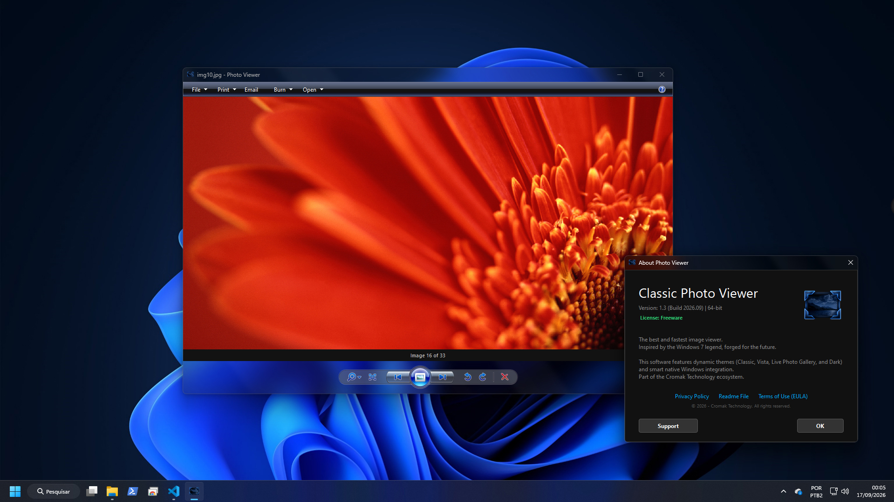
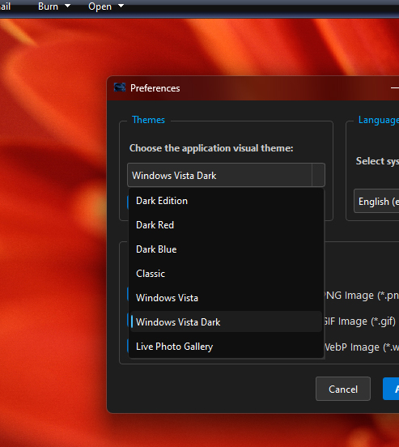
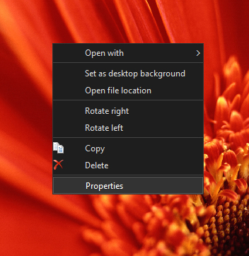
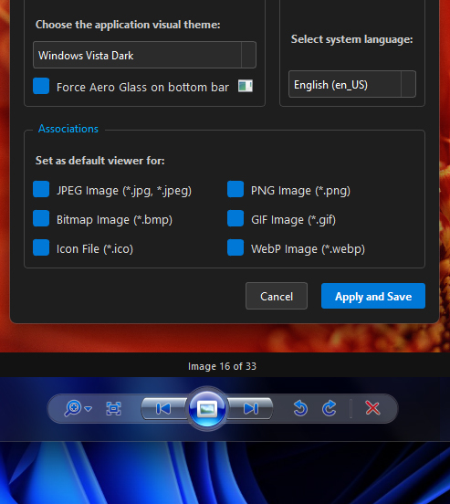
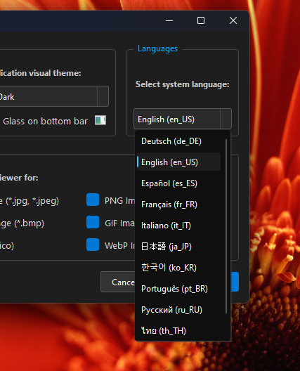
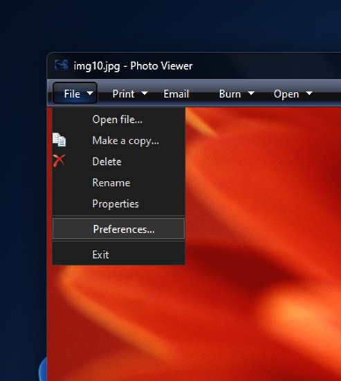
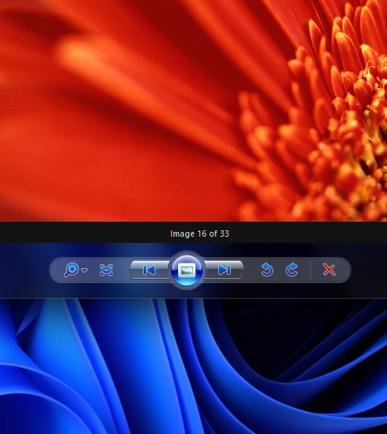

Photo Viewer for Windows
The Classic Windows Experience in a Modern Engine
Version: 1.4.2 (Build: 2026.11)

The Beauty of the Past, the Engineering of the Future
Relive the fast and direct interface that marked an era, without sacrificing modern speed and security.
🖼️ Classic Themes
Choose between Classic, Windows Vista, Live Photo Gallery, or the modern Dark Mode. The interface adapts perfectly to your taste and nostalgia level.
⚡ Native Performance
Developed in Python and PyQt6, the rendering engine loads your images almost instantly. Fluid navigation, smooth zooming, and immediate response.
🔒 100% Offline and Private
Your photos are yours. The software has NO telemetry, collects no data, and does not access the internet. What happens on your computer stays on your computer.
Layout Overview
Click on the images to expand and see interface details.
Classic Navigation
Playback, rotation, zoom, and deletion controls exactly where you remember them. Works perfectly as a gallery or an individual viewer.

Customizable Themes
Tired of the light screen? Choose from various visual variations, including new and modern Dark Modes, while keeping all the original elegance.

Quick Context Menu
Quickly access useful options like copying, deleting, rotating the image, or setting it as your desktop background right from the right-click menu.

Smart Integration
Associate major image formats (JPG, PNG, WEBP, etc.) to open natively with the program with just one click in the preferences.

Real-time Languages
Complete and instant translation to 11 of the most spoken languages in the world. Change the interface language without needing to restart the app.

Nostalgic Toolbar
The classic options grouped at the top of the window. Easily access shortcuts to print, burn to disc, or send the image by email.

Aero Glass Transparency
Bring back the famous translucent glass borders to the most modern operating systems (Windows 10 and 11) with a dedicated native integration.
Low-Level Engineering in PyQt6
-
Multiple Formats Supported
Effortlessly loads JPG, PNG, BMP, WEBP images and more, using native decoding libraries for maximum speed.
-
Dynamic Internationalization
Full support for 8 languages (English, Portuguese, Spanish, French, Japanese, etc.) with real-time switching, no app restart required.
-
Background Loading (Threads)
Listing and creating thumbnails in large folders is done in the background so the main interface never freezes or stutters.
⚡ Fair Use and Transparency
This is an unofficial fan-made project for fans. It has no affiliation with Microsoft Corporation. Original trademarks and designs are the property of their respective owners. The objective is historical and educational preservation.
System Compatibility
Compiled independently (Stand-Alone). Does not require Python, libraries, or external frameworks to be installed on your machine.
Download Now
Photo Viewer is a 100% free project. You can support the developer if you wish.
Personal Use (Freeware)
- Full Software
- All Classic Themes
- Extension Associations
- Fully Offline
- No Direct Support
Project Supporter
- The software is identical, but:
- You encourage new updates
- Helps keep the site online
- Our eternal gratitude ❤️
🔒 Distributed with pride by Cromak Technology.